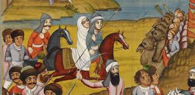
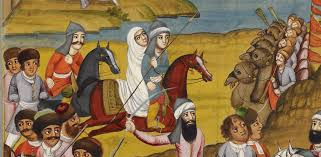

The Battle of Krtsanisi (Georgian: კრწანისის ბრძოლა, romanized: k'rts'anisis brdzola, Persian: نبرد کرتسانیسی)
was fought between the army of Qajar Iran
(Persia) and the Georgian armies of the Kingdom of Kartli-Kakheti and Kingdom of Imereti
at the place of Krtsanisi near Tbilisi,
Georgia, from September 8 to September 11, 1795, as part of Agha Mohammad Khan
Qajar's war in response to King Heraclius II of Georgia’s alliance with the Russian Empire.
The battle resulted in the decisive defeat of the Georgians, capture, and complete
destruction of their capital Tbilisi,[1 as well as the temporary absorption
of eastern parts of Georgia into the Iranian empire.
Although the Russian Empire had officially declared in the Treaty of Georgievsk of
1783 that it would protect Heraclius's kingdom against any new Iranian attempts
to re-subjugate Georgia, Russia did not intervene to protect its ally.
.jpeg)
.jpeg)
Eastern Georgia, composed of the kingdoms of Kartli and Kakheti, had been in the early
modern era under Iranian suzerainty since the 1510s.
In 1744, Nader Shah had granted the kingship of Kartli and Kakheti to Teimuraz II and his
son Heraclius II respectively, as a reward for their loyalty.
When Nader Shah died in 1747, they capitalized on the chaos that had erupted in
mainland Iran, and declared de facto independence. After Teimuraz II died in 1762,
Heraclius II assumed control over Kartli, and united the two
kingdoms in a personal union as the Kingdom of Kartli-Kakheti, becoming the first Georgian ruler to preside over a politically
unified eastern Georgia in three centuries.
At about the same time, Karim Khan Zand had ascended the
Iranian throne; Heraclius II quickly tendered his de jure submission to the new Iranian ruler, however,
de facto, he remained autonomous.
In 1783, Heraclius placed his kingdom under the protection of the Russian Empire in the Treaty of Georgievsk.
In the last few decades of the 18th century, Georgia had become a more important element
in Russo-Iranian relations than some provinces in northern mainland Persia, such as Mazandaran or even Gilan. Unlike Peter I, Catherine, the then
ruling monarch of Russia, viewed Georgia as a pivot for her Caucasian policy, as Russia's new aspirations were to use it as a base of operations
against both Iran and the Ottoman Empire, both immediate bordering geo-political rivals of Russia.
.jpeg)
.jpeg) 

In August 1795, Agha Mohammad Khan crossed the Aras river with a 70,000-strong army.
This force was divided in three: the left wing was sent in the direction of Erivan, the right one parallel to the Caspian Sea into
the Mughan across the lower Aras towards Dagestan and Shirvan, while the Shah headed the centre force himself,
advancing towards the fortress of Shusha in the Karabakh Khanate, which he besieged between 8 July and 9 August 1795.
His right and left wing forced the Khans of Ganja and Erivan into alliance respectively.
Having abandoned the siege of Shusha due to stiff resistance, which was further aided by Georgian crown prince Aleksandre,
the Khan of Karabakh, Ibrahim Khan, eventually surrendered to Mohammad Khan after discussions, including the paying of regular tribute and
to surrender hostages, though the Qajar forces were still denied entrance to Shusha.
.jpeg)
.jpeg)
.jpeg)